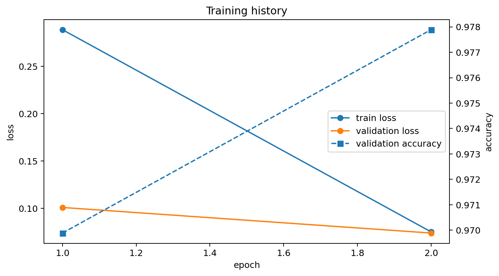
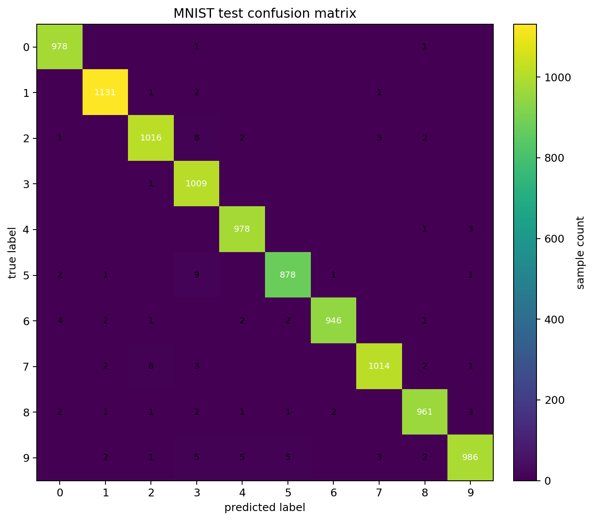
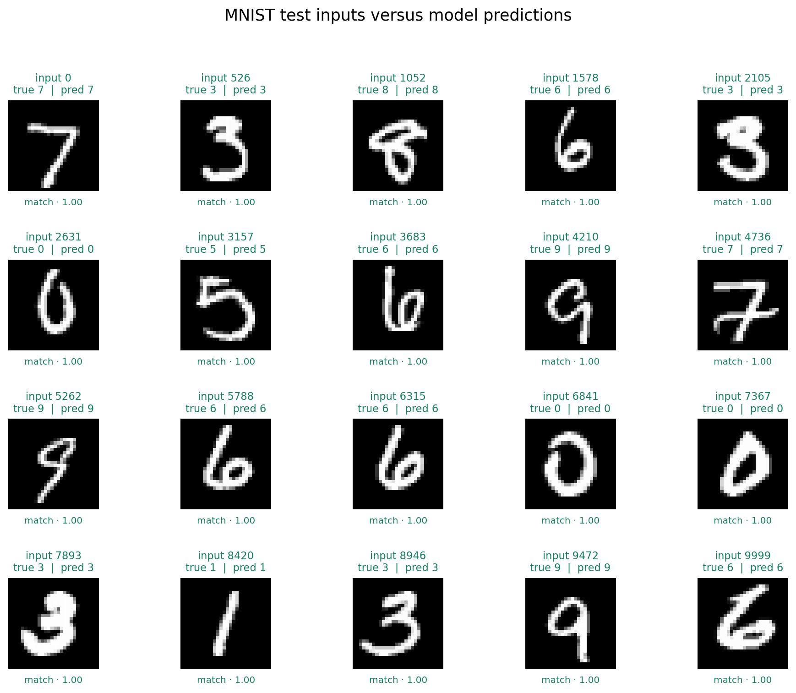

KYDW 本科生科研入门体验项目
实践项目参考答案 00：基础编程与人工智能
参考代码与说明按实践任务排列，可结合图像、指标和输出文件核对自己的实现。
运行后把图像、指标和输出文件与自己的结果放在一起阅读。
Markdown 单元格01
实践项目 00：MNIST 手写数字分类
这份 Notebook 用手写数字图片完成一次完整的分类练习：先读取输入和标签，再检查数据，计算归一化参数，实现小型卷积神经网络，训练模型，评价测试集，最后观察输入加入噪声后结果怎样变化。
Kaggle Notebook 是本项目的首选实践入口。打开公开 Notebook 后，点击“复制并编辑”保存到自己的账户，再按顺序运行单元格；下载到电脑运行是补充方式。每个任务都会说明输入、处理、输出和参考实现。
图片和 JSON 用于帮助自己检查代码和记录结果。
本页提供完整参考实现。 按顺序运行后，核对图像、指标和输出文件；各项数值由当前数据计算。
任务总览
1. 读取图像和标签，核对 shape、数据类型、像素范围和类别分布。 2. 只用训练子集计算均值和标准差，并让三个数据集使用同一组参数。 3. 实现 CNN 的第二个卷积块和分类层。 4. 按“清空梯度 → 前向传播 → 损失 → 反向传播 → 更新参数”的顺序训练。 5. 用独立测试集计算准确率、每类 F1 和混淆矩阵。 6. 给测试图像加入高斯噪声，比较清洁输入和扰动输入。 7. 只改变学习率，完成一次单变量对照。
需要保存的结果
task0_data_visualization.pngtask0_training_curve.pngtask0_confusion_matrix.pngtask0_result.json
Markdown 单元格02
图像、标签与模型输出
MNIST 的每张图片包含 28×28 个灰度像素，标签是 0—9 中的一个整数。例如，标签 7 表示这张图片对应数字 7。
模型接收形状为 [batch, 1, 28, 28] 的一批图片，为每张图片输出 10 个类别分数。分数最高的类别是预测数字；将它与原始标签比较，可以统计预测正确的比例和各类错误。
代码单元格03
# 0. 导入库与固定随机性
# 输入：无；输出：后续步骤使用的库、随机种子、计算设备和工作目录。
from pathlib import Path # 用 Path 处理文件和目录路径
import json, random, time, warnings
import numpy as np # 导入数组和数值运算工具
import pandas as pd # 导入表格读取与整理工具
import matplotlib.pyplot as plt # 导入绘图工具
import torch # 导入张量、模型或数据加载工具
import torch.nn as nn # 导入张量、模型或数据加载工具
from torch.utils.data import DataLoader, TensorDataset, random_split # 导入张量、模型或数据加载工具
from torchvision import datasets, transforms # 导入张量、模型或数据加载工具
from sklearn.metrics import accuracy_score, f1_score, confusion_matrix, classification_report # 导入本任务使用的评价指标
SEED = 42 # 固定随机状态以便复现实验
random.seed(SEED) # 固定随机状态以便复现实验
np.random.seed(SEED) # 固定随机状态以便复现实验
torch.manual_seed(SEED) # 固定随机状态以便复现实验
if torch.cuda.is_available():
torch.cuda.manual_seed_all(SEED) # 固定随机状态以便复现实验
device = torch.device('cuda' if torch.cuda.is_available() else 'cpu') # 选择可用的 GPU 或 CPU
WORKDIR = Path('/kaggle/working') if Path('/kaggle/working').exists() else Path.cwd() # 确定图像与 JSON 的保存目录
print('device =', device)
print('working directory =', WORKDIR)
Markdown 单元格04
1. 读取数据
输入： Kaggle 中的 Digit Recognizer train.csv、torchvision 可以下载的 MNIST，或用于本地结构检查的小型回退数据。
处理： load_digit_data() 把每张图片整理为 [1, 28, 28] 的浮点张量，把标签整理为整数，并返回训练数据、测试数据和数据集名称。
输出： train_full、test_dataset 和 dataset_name。如果显示 sklearn digits fallback，只能说明 Notebook 结构可以检查；正式实践要在 Kaggle 中确认数据名称为 MNIST。
代码单元格05
def load_digit_data(): # 按可用数据源读取手写数字图像与标签
"""返回 train_dataset, test_dataset, dataset_name。图像范围统一为 [0, 1]，形状为 [1, 28, 28]。"""
# 输入：可能存在的 CSV；输出：train_dataset、test_dataset、dataset_name。
# Kaggle Digit Recognizer 常见路径
csv_candidates = list(Path('/kaggle/input').glob('**/train.csv')) if Path('/kaggle/input').exists() else []
for csv_path in csv_candidates:
try:
df = pd.read_csv(csv_path)
pixel_cols = [c for c in df.columns if str(c).startswith('pixel')] # 选出表示 784 个图像像素的列
if 'label' in df.columns and len(pixel_cols) == 784:
x = torch.tensor(df[pixel_cols].to_numpy(), dtype=torch.float32).reshape(-1, 1, 28, 28) / 255.0
y = torch.tensor(df['label'].to_numpy(), dtype=torch.long)
g = torch.Generator().manual_seed(SEED) # 固定随机状态以便复现实验
n_test = max(1000, int(0.15 * len(x))) # 确定保留作测试的样本数量
perm = torch.randperm(len(x), generator=g) # 生成可复现的随机样本顺序
test_idx, train_idx = perm[:n_test], perm[n_test:] # 把打乱的样本索引分为测试和训练两组
return TensorDataset(x[train_idx], y[train_idx]), TensorDataset(x[test_idx], y[test_idx]), 'MNIST / Kaggle Digit Recognizer'
except Exception:
continue # 继续尝试其他数据来源
# 标准 torchvision MNIST
try:
tfm = transforms.ToTensor()
root = WORKDIR / 'mnist_data' # 指定 MNIST 的下载与缓存位置
train_ds = datasets.MNIST(root=root, train=True, transform=tfm, download=True) # 建立互相隔离的数据划分
test_ds = datasets.MNIST(root=root, train=False, transform=tfm, download=True) # 建立互相隔离的数据划分
return train_ds, test_ds, 'MNIST / torchvision'
except Exception as exc:
warnings.warn(f'MNIST 暂时无法读取，使用 sklearn digits 完成本地结构检查：{exc}')
# 本地回退，仅用于检查 Notebook 结构
from sklearn.datasets import load_digits
from sklearn.model_selection import train_test_split
import torch.nn.functional as F # 导入张量、模型或数据加载工具
d = load_digits()
x = torch.tensor(d.images, dtype=torch.float32).unsqueeze(1) / 16.0
x = F.interpolate(x, size=(28, 28), mode='bilinear', align_corners=False)
y = torch.tensor(d.target, dtype=torch.long)
idx = np.arange(len(y)) # 为每个样本建立整数索引
tr, te = train_test_split(idx, test_size=0.2, random_state=SEED, stratify=y.numpy()) # 固定随机状态以便复现实验
return TensorDataset(x[tr], y[tr]), TensorDataset(x[te], y[te]), 'sklearn digits fallback（仅环境检查）'
train_full, test_dataset, dataset_name = load_digit_data() # 读取训练数据、测试数据并记录实际来源
print(dataset_name)
print('train_full =', len(train_full), 'test =', len(test_dataset))
Markdown 单元格06
任务 1：数据检查与真实样本可视化
这一步先看清楚模型将要接收的输入。train_full[0] 给出一张图像和它的数字标签；[1, 28, 28] 中，1 是灰度通道，两个 28 分别是高度和宽度。
计算与核对： 查看下一个代码单元格输出的训练样本数、单张图像 shape、dtype、像素最小值、像素最大值和 0–9 类别计数。class_counts 应是长度为 10 的一维计数张量。
输入与输出： 输入是 train_full、sample_image 和 all_labels；输出是统计量、真实手写数字样本图和类别分布图。统计量必须来自当前数据。
检查： 运行后底部的 shape、像素范围和类别数量断言应通过，并应显示真实样本。
代码单元格07
# 参考实现：完成数据检查
sample_image, sample_label = train_full[0] # 取出一张样本图像及其数字标签
sample_count = len(train_full) # 参考实现：训练数据样本数
image_shape = tuple(sample_image.shape) # 参考实现：单张图像 shape
image_dtype = str(sample_image.dtype) # 参考实现：数据类型
pixel_min = float(sample_image.min()) # 参考实现：像素最小值，转成 Python float
pixel_max = float(sample_image.max()) # 参考实现：像素最大值，转成 Python float
all_labels = torch.tensor([int(train_full[i][1]) for i in range(len(train_full))])
class_counts = torch.bincount(all_labels, minlength=10) # 参考实现：长度为 10 的类别计数张量
print('sample_count =', sample_count)
print('image_shape =', image_shape)
print('image_dtype =', image_dtype)
print('pixel range =', pixel_min, pixel_max)
print('label range =', int(all_labels.min()), int(all_labels.max()))
print('class_counts =', class_counts)
assert sample_count == len(train_full) # 核对数据或计算结果是否符合预期条件
assert tuple(image_shape) == (1, 28, 28) # 核对数据或计算结果是否符合预期条件
assert pixel_min >= 0 and pixel_max <= 1 # 核对数据或计算结果是否符合预期条件
assert len(class_counts) == 10 # 核对数据或计算结果是否符合预期条件
代码单元格08
# 输入：train_full 和上一单元格得到的 class_counts。
# 输出：真实样本图、标签分布图和 task0_data_visualization.png。
# 真实样本与类别分布
fig, axes = plt.subplots(3, 7, figsize=(12, 6))
for ax, idx in zip(axes.ravel()[:20], np.linspace(0, len(train_full)-1, 20, dtype=int)):
image, label = train_full[idx]
ax.imshow(image.squeeze().numpy(), cmap='gray') # 显示图像数组或矩阵
ax.set_title(f'label={int(label)}') # 标注当前图像的内容
ax.axis('off')
for ax in axes.ravel()[20:]:
ax.axis('off')
plt.tight_layout()
plt.savefig(WORKDIR/'task0_data_visualization.png', dpi=180, bbox_inches='tight') # 将当前图像写入结果目录
plt.show()
plt.figure(figsize=(8, 4))
plt.bar(np.arange(10), class_counts.numpy())
plt.xticks(np.arange(10))
plt.xlabel('digit label')
plt.ylabel('sample count')
plt.title('Training label distribution')
plt.show()
Markdown 单元格09
2. 划分训练集和验证集
训练集用于更新模型参数，验证集用于比较训练过程中的模型，测试集要留到所有设置确定后再使用。固定随机种子可以让这次划分保持一致。
输入： train_full。
输出： train_dataset、val_dataset 和保留的 test_dataset。下一个任务只能用 train_dataset 计算归一化参数。
代码单元格10
# 输入：train_full；输出：train_dataset、val_dataset 和保留的 test_dataset。
val_size = max(1000, int(0.15 * len(train_full))) if len(train_full) > 5000 else max(200, int(0.15 * len(train_full))) # 确定验证子集的样本数量
train_size = len(train_full) - val_size # 计算用于训练的样本数量
train_dataset, val_dataset = random_split( # 建立互相隔离的数据划分
train_full, [train_size, val_size], generator=torch.Generator().manual_seed(SEED)
)
print('train =', len(train_dataset), 'validation =', len(val_dataset), 'test =', len(test_dataset))
Markdown 单元格11
任务 2：训练集归一化
归一化把像素变成以训练集为基准的数值，能让优化过程更稳定。验证集和测试集共同使用训练子集的均值和标准差。
计算与核对： 遍历 stat_loader，累计每批 images 的像素总和、平方和和像素数量，再计算 train_mean 与 train_std。先用 E[x²] - E[x]² 计算方差，再开平方得到标准差。
输入与输出： 每批输入 images 的 shape 是 [batch, 1, 28, 28]；输出 train_mean、train_std 是标量，normalize_batch(images) 返回同样 shape 的归一化张量。
检查： 均值和标准差只能来自训练子集；底部断言和后面的三个 DataLoader 创建应顺利运行。
代码单元格12
# 参考实现：从训练子集计算像素均值与标准差
stat_loader = DataLoader(train_dataset, batch_size=256, shuffle=False) # 按批次读取数据，训练集按设置打乱顺序
pixel_sum = 0.0 # 累计训练图像像素总和，用于计算均值
pixel_sq_sum = 0.0 # 累计训练图像像素平方和，用于计算方差
pixel_count = 0 # 累计参与统计的训练像素数量
for images, _ in stat_loader:
# 参考实现：累计 images 的总和、平方和与像素数量
pixel_sum += images.sum().item() # 累计训练图像像素总和，用于计算均值
pixel_sq_sum += (images ** 2).sum().item() # 累计训练图像像素平方和，用于计算方差
pixel_count += images.numel() # 累计参与统计的训练像素数量
train_mean = pixel_sum / pixel_count # 参考实现：
train_std = max(pixel_sq_sum / pixel_count - train_mean ** 2, 1e-8) ** 0.5 # 先由像素二阶矩计算方差，再开平方得到标准差
print('train_mean =', train_mean, 'train_std =', train_std)
assert 0 < train_mean < 1 # 核对数据或计算结果是否符合预期条件
assert train_std > 0 # 核对数据或计算结果是否符合预期条件
def normalize_batch(images): # 用训练子集的均值和标准差归一化图像
return (images - train_mean) / (train_std + 1e-8)
BATCH_SIZE = 128 # 设置每批读取的图像数量
train_loader = DataLoader(train_dataset, batch_size=BATCH_SIZE, shuffle=True, num_workers=0) # 按批次读取数据，训练集按设置打乱顺序
val_loader = DataLoader(val_dataset, batch_size=BATCH_SIZE, shuffle=False, num_workers=0) # 按批次读取数据，训练集按设置打乱顺序
test_loader = DataLoader(test_dataset, batch_size=BATCH_SIZE, shuffle=False, num_workers=0) # 按批次读取数据，训练集按设置打乱顺序
Markdown 单元格13
任务 3：实现小型卷积神经网络
卷积层从局部图像区域提取特征，池化层缩小空间尺寸，全连接层把特征转换成 10 个类别分数。
计算与核对： 参考模型包含两个卷积块和分类层；查看各层如何改变张量尺寸。
输入与输出： 模型输入是 [batch, 1, 28, 28]；第一块后是 [batch, 16, 14, 14]，第二块和池化后是 [batch, 32, 7, 7]，最终 logits 是 [batch, 10]。
检查： 查看模型结构、参数量和 output shape；最后的 shape 断言应通过。
代码单元格14
class SmallCNN(nn.Module):
def __init__(self):
super().__init__()
self.features = nn.Sequential(
nn.Conv2d(1, 16, kernel_size=3, padding=1), # 用卷积提取局部图像特征
nn.ReLU(), # 加入非线性激活
nn.MaxPool2d(2), # 对局部区域取最大值并缩小空间尺寸
# 参考实现：加入 16→32 的 3×3 卷积、ReLU 和 2×2 最大池化
nn.Conv2d(16, 32, kernel_size=3, padding=1), # 用卷积提取局部图像特征
nn.ReLU(), # 加入非线性激活
nn.MaxPool2d(2), # 对局部区域取最大值并缩小空间尺寸
)
self.classifier = nn.Sequential(
nn.Flatten(), # 把空间特征展平为向量
# 参考实现：加入 32×7×7 → 64 的全连接层、ReLU，以及 64 → 10 的输出层
nn.Linear(32 * 7 * 7, 64), # 用线性层转换特征维数
nn.ReLU(), # 加入非线性激活
nn.Linear(64, 10), # 用线性层转换特征维数
)
def forward(self, x):
x = self.features(x)
return self.classifier(x)
model = SmallCNN().to(device)
example = torch.zeros(4, 1, 28, 28, device=device)
with torch.no_grad(): # 评价和展示时关闭梯度记录
output = model(example)
print(model)
print('output shape =', tuple(output.shape))
print('parameter count =', sum(p.numel() for p in model.parameters()))
assert tuple(output.shape) == (4, 10) # 核对数据或计算结果是否符合预期条件
Markdown 单元格15
任务 4：实现训练步骤
一个训练批次依次完成：清空旧梯度、前向传播、计算损失、反向传播、更新参数。每轮训练结束后，验证集只用于评价，不更新参数。
计算与核对： 参考代码按上述顺序执行五个训练动作。
输入与输出： 输入是归一化后的 images [batch, 1, 28, 28] 和 labels；输出是标量 loss、批次预测和训练/验证指标。随后会保存训练曲线。
检查： 每轮都应打印 train loss、train accuracy 和 validation accuracy，并生成 task0_training_curve.png。
代码单元格16
criterion = nn.CrossEntropyLoss() # 定义分类损失函数
optimizer = torch.optim.Adam(model.parameters(), lr=1e-3) # 为模型参数配置优化器和学习率
def evaluate(model, loader, noise_sigma=0.0): # 在指定数据集计算损失、准确率与预测标签
model.eval() # 切换为评价模式
ys, ps = [], [] # 分别收集真实标签与预测标签
total_loss = 0.0 # 累计评价集各批次的样本损失
with torch.no_grad(): # 评价和展示时关闭梯度记录
for images, labels in loader:
images, labels = images.to(device), labels.to(device) # 把图像与标签移动到同一计算设备
if noise_sigma > 0:
images = torch.clamp(images + noise_sigma * torch.randn_like(images), 0, 1)
logits = model(normalize_batch(images))
total_loss += criterion(logits, labels).item() * len(labels) # 计算预测值与目标之间的损失
preds = logits.argmax(dim=1) # 取分数最高的类别作为预测标签
ys.extend(labels.cpu().numpy())
ps.extend(preds.cpu().numpy())
return total_loss / len(loader.dataset), accuracy_score(ys, ps), np.array(ys), np.array(ps)
def train_one_epoch(model, loader, optimizer): # 遍历训练批次并返回本轮平均损失和准确率
model.train() # 切换为训练模式
running_loss = 0.0 # 累计本轮训练的样本损失
correct = 0 # 累计预测正确的样本数
total = 0 # 累计本轮处理的样本数
for images, labels in loader:
images, labels = images.to(device), labels.to(device) # 把图像与标签移动到同一计算设备
images = normalize_batch(images)
# 参考实现：完成五个训练动作
# 1. optimizer 清空梯度
# 2. model 前向传播得到 logits
# 3. criterion 计算 loss
# 4. loss 反向传播
# 5. optimizer 更新参数
optimizer.zero_grad(set_to_none=True) # 清空上一个批次留下的梯度
logits = model(images)
loss = criterion(logits, labels) # 计算预测值与目标之间的损失
loss.backward() # 根据损失计算各参数的梯度
optimizer.step() # 按当前梯度更新模型参数
running_loss += loss.item() * len(labels) # 累计本轮训练的样本损失
correct += (logits.argmax(dim=1) == labels).sum().item() # 取分数最高的类别作为预测标签
total += len(labels) # 累计本轮处理的样本数
return running_loss / total, correct / total
代码单元格17
# 保存基线训练起点，供任务 7 使用相同权重与批次顺序。
initial_state = {k: v.detach().cpu().clone() for k, v in model.state_dict().items()}
initial_cpu_rng_state = torch.get_rng_state().clone()
initial_cuda_rng_states = [state.clone() for state in torch.cuda.get_rng_state_all()] if torch.cuda.is_available() else None
# 输入：已补全的 model、train_loader、val_loader 和 evaluate。
# 输出：最佳验证模型、训练记录和 task0_training_curve.png。
EPOCHS = 20
history = {'train_loss': [], 'train_acc': [], 'val_loss': [], 'val_acc': []} # 记录每轮训练与验证指标
best_state = None # 独立保存验证准确率最高时的模型权重
best_val = -1 # 记录目前最高的验证准确率
for epoch in range(EPOCHS):
train_loss, train_acc = train_one_epoch(model, train_loader, optimizer)
val_loss, val_acc, _, _ = evaluate(model, val_loader)
history['train_loss'].append(train_loss) # 记录本轮指标，供训练曲线使用
history['train_acc'].append(train_acc) # 记录本轮指标，供训练曲线使用
history['val_loss'].append(val_loss) # 记录本轮指标，供训练曲线使用
history['val_acc'].append(val_acc) # 记录本轮指标，供训练曲线使用
if val_acc > best_val:
best_val = val_acc # 记录目前最高的验证准确率
best_state = {k: v.detach().cpu().clone() for k, v in model.state_dict().items()} # 独立保存验证准确率最高时的模型权重
print(f'Epoch {epoch+1}/{EPOCHS} | train loss {train_loss:.4f} | train acc {train_acc:.4f} | val acc {val_acc:.4f}')
model.load_state_dict(best_state) # 恢复保存的模型权重
model.to(device)
fig, ax1 = plt.subplots(figsize=(8, 4.5))
ax1.plot(range(1, EPOCHS+1), history['train_loss'], marker='o', label='train loss') # 绘制各轮指标或输入信号的变化
ax1.plot(range(1, EPOCHS+1), history['val_loss'], marker='o', label='validation loss') # 绘制各轮指标或输入信号的变化
ax1.set_xlabel('epoch') # 标注坐标轴含义
ax1.set_ylabel('loss') # 标注坐标轴含义
ax2 = ax1.twinx()
ax2.plot(range(1, EPOCHS+1), history['val_acc'], marker='s', linestyle='--', label='validation accuracy') # 绘制各轮指标或输入信号的变化
ax2.set_ylabel('accuracy') # 标注坐标轴含义
lines = ax1.get_lines() + ax2.get_lines()
ax1.legend(lines, [l.get_label() for l in lines], loc='center right') # 显示曲线对应的图例
plt.title('Training history')
plt.tight_layout()
plt.savefig(WORKDIR/'task0_training_curve.png', dpi=180, bbox_inches='tight') # 将当前图像写入结果目录
plt.show()
Markdown 单元格18
任务 5：测试集评价
测试集代表模型面对新输入时的表现。混淆矩阵的行是真实标签，列是预测标签；对角线上的数值表示预测正确的样本。
计算与核对： 调用 evaluate 得到测试损失、准确率、真实标签和预测标签，再计算 macro-F1、每类 F1 和混淆矩阵。
输入与输出： 输入是最佳验证模型和 test_loader；输出是测试指标、长度为 10 的 per_class_f1、[10, 10] 的 cm，以及后面的混淆矩阵图片和分类报告。
检查： cm.shape == (10, 10) 和每类 F1 长度断言应通过。
代码单元格19
# 参考实现：调用 evaluate，并计算指标
# test_loss, test_acc, y_true, y_pred = ...
# macro_f1 = ...
# per_class_f1 = ...
# cm = ...
test_loss, test_acc, y_true, y_pred = evaluate(model, test_loader)
macro_f1 = f1_score(y_true, y_pred, average='macro', zero_division=0)
per_class_f1 = f1_score(y_true, y_pred, average=None, labels=np.arange(10), zero_division=0)
cm = confusion_matrix(y_true, y_pred, labels=np.arange(10))
print('test accuracy =', test_acc)
print('macro F1 =', macro_f1)
print('per-class F1 =', per_class_f1)
assert cm.shape == (10, 10) # 核对数据或计算结果是否符合预期条件
assert len(per_class_f1) == 10 # 核对数据或计算结果是否符合预期条件
代码单元格20
# 输入：cm、y_true、y_pred；输出：混淆矩阵图片和分类报告。
plt.figure(figsize=(7, 6))
plt.imshow(cm, cmap='viridis') # 显示图像数组或矩阵
plt.colorbar(label='sample count')
plt.xticks(range(10))
plt.yticks(range(10))
plt.xlabel('predicted label')
plt.ylabel('true label')
plt.title('MNIST test confusion matrix')
for i in range(10):
for j in range(10):
if cm[i, j] > 0:
plt.text(j, i, int(cm[i, j]), ha='center', va='center', fontsize=7,
color='white' if cm[i, j] > cm.max()*0.45 else 'black')
plt.tight_layout()
plt.savefig(WORKDIR/'task0_confusion_matrix.png', dpi=180, bbox_inches='tight') # 将当前图像写入结果目录
plt.show()
report = classification_report(y_true, y_pred, digits=4)
print(report)
Markdown 单元格21
任务 6：噪声稳健性
这一步不再训练模型，只改变测试输入。代码给原始测试图像加入标准差为 0.25 的高斯噪声，并把像素裁剪回 [0, 1]，再用同一个模型预测。
计算与核对： 使用 evaluate(model, test_loader, noise_sigma=0.25) 得到加噪准确率，并计算 accuracy_drop = test_acc - noisy_acc。
输入与输出： 输入是清洁测试图像和固定模型；输出是 noisy_acc 与 accuracy_drop。准确率下降越大，说明模型对这种输入扰动越敏感。
检查： 输出中应同时出现 clean accuracy、noisy accuracy 和 accuracy drop，noisy_acc 应在 [0, 1]。
代码单元格22
# 参考实现：使用 evaluate 的 noise_sigma 参数完成稳健性评价
noise_sigma = 0.25 # 设置加入测试图像的高斯噪声标准差
noisy_loss, noisy_acc, _, _ = evaluate(model, test_loader, noise_sigma=noise_sigma)
accuracy_drop = test_acc - noisy_acc
print('clean accuracy =', test_acc)
print('noisy accuracy =', noisy_acc)
print('accuracy drop =', accuracy_drop)
assert noisy_acc <= 1 and noisy_acc >= 0 # 核对数据或计算结果是否符合预期条件
Markdown 单元格23
任务 7：学习率对照
比较学习率 1e-3 和 1e-2 对最佳验证准确率的影响。任务 4 在基线训练开始前保存了模型初始权重、CPU 随机状态和可用 GPU 的随机状态。
1. 保留基线模型、best_val 和已有测试结果。 2. 新建 comparison_model，加载 initial_state，并单独创建学习率为 1e-2 的优化器。 3. 在新模型和优化器建立后，恢复 initial_cpu_rng_state 与 initial_cuda_rng_states，再开始迭代 DataLoader，使两次训练从相同权重和相同批次顺序开始。 4. 使用任务 4 的 train_one_epoch 与 evaluate 训练同样的 EPOCHS 轮，记录最高验证准确率。 5. 在 comparison 中写明学习率、两次验证结果以及实际差异。
下方提供完整参考实现。运行后用本次得到的数值核对比较。
若要重新生成整组比较，请重新运行模型建立单元格、任务 4 和后续单元格，保留同一组数据划分。
代码单元格24
comparison_model = SmallCNN().to(device) # 为对照实验新建独立模型
comparison_model.load_state_dict(initial_state) # 恢复基线训练开始前的权重
comparison_optimizer = torch.optim.Adam(comparison_model.parameters(), lr=1e-2) # 只改变学习率
torch.set_rng_state(initial_cpu_rng_state) # 恢复训练批次打乱所用的 CPU 随机状态
if initial_cuda_rng_states is not None:
torch.cuda.set_rng_state_all(initial_cuda_rng_states) # 恢复 GPU 随机状态
comparison_best = -1.0 # 记录对照实验最佳验证准确率
for _ in range(EPOCHS): # 与基线使用相同训练轮数
train_one_epoch(comparison_model, train_loader, comparison_optimizer) # 复用同一训练流程
_, comparison_val, _, _ = evaluate(comparison_model, val_loader) # 使用同一验证集
comparison_best = max(comparison_best, comparison_val)
comparison = {
'changed_variable': 'learning_rate',
'baseline_value': 1e-3,
'new_value': 1e-2,
'baseline_best_val_accuracy': float(best_val),
'new_best_val_accuracy': float(comparison_best),
'observation': '只改变学习率，保持其他条件不变，重新训练并比较验证集最佳准确率。',
}
comparison
Markdown 单元格25
8. 保存结果
这一单元把数据名称、数据规模、模型设置、测试指标、噪声结果和单变量对照写入 task0_result.json。
输入： 前面单元格生成的变量，如 dataset_name、best_val、test_acc、noisy_acc 和 comparison。
输出： 一个可以重新查看的 JSON 文件。若显示 sklearn digits fallback，结果只用于结构检查；正式实践要在 Kaggle 中用 MNIST 重新运行。
代码单元格26
# 输入：前面各任务产生的指标和 comparison。
# 输出：task0_result.json。
result = {
'dataset_name': dataset_name, # 整理模型输入批次
'random_seed': SEED,
'train_samples': len(train_dataset), # 整理模型输入批次
'validation_samples': len(val_dataset), # 整理模型输入批次
'test_samples': len(test_dataset), # 整理模型输入批次
'image_shape': list(image_shape),
'train_mean': float(train_mean),
'train_std': float(train_std),
'model_name': 'SmallCNN',
'parameter_count': int(sum(p.numel() for p in model.parameters())),
'batch_size': BATCH_SIZE, # 整理模型输入批次
'epochs': EPOCHS,
'optimizer': 'Adam', # 配置模型或优化过程
'learning_rate': 1e-3,
'best_validation_accuracy': float(best_val),
'test_loss': float(test_loss),
'test_accuracy': float(test_acc),
'test_macro_f1': float(macro_f1),
'per_class_f1': [float(x) for x in per_class_f1],
'noise_sigma': noise_sigma,
'noisy_test_accuracy': float(noisy_acc),
'accuracy_drop': float(accuracy_drop),
'comparison': comparison,
'output_files': [
'task0_data_visualization.png',
'task0_training_curve.png',
'task0_confusion_matrix.png',
'task0_result.json'
]
}
with open(WORKDIR/'task0_result.json', 'w', encoding='utf-8') as f:
json.dump(result, f, ensure_ascii=False, indent=2) # 保存结果供后续核对
print(json.dumps(result, ensure_ascii=False, indent=2)) # 保存结果供后续核对
Markdown 单元格27
结果检查
依次打开四个输出文件：数据图检查输入和标签，训练曲线检查参数是否发生学习，混淆矩阵定位容易混淆的数字，JSON 保存本次实验的设置和指标。
一次参考运行记录为：测试准确率约 0.9897、测试集 macro-F1 约 0.98965；加入标准差 0.25 的高斯噪声后准确率约 0.9771。单变量对照只改变学习率，其余训练设置保持不变。运行时结合自己的输出和图像阅读。
参考输出
一次参考运行记录为：测试准确率约 0.9897，测试集 macro-F1 约 0.98965；加入标准差 0.25 的高斯噪声后准确率约 0.9771。

训练损失、验证损失与验证准确率
MNIST 测试集混淆矩阵
测试输入、真实标签与预测结果对比